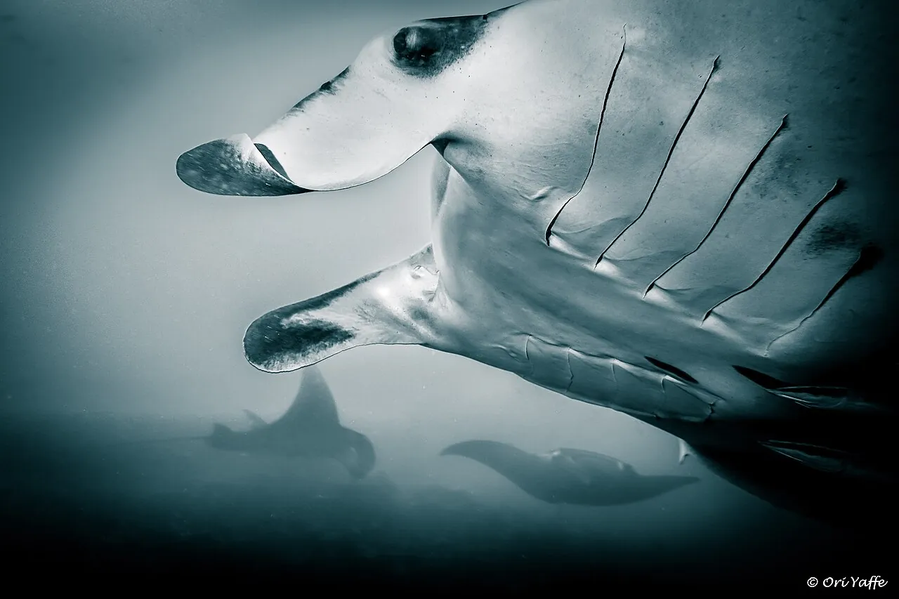

Hanifaru Bay
Baa, Maldives · snorkeling

Baie protégée où des centaines de raies manta se rassemblent pour se nourrir de juin à novembre. Réserve de biosphère.
- Lieu
- Baa, Maldives
- Niveau
- Débutant
- Activités
- snorkeling
- Type d'eau
- Mer / océan
- Coordonnées
- 5.18, 73.14 (position approximative du secteur)
Dangers à connaître
- Plongée interdite dans la baie.
- Mantas : jamais de contact.
Le conseil d'Ocean Buddy
Seul le snorkeling est autorisé, avec un guide agréé et en nombre limité.
Ouvrir dans Ocean Buddy Télécharger sur l'App Store
Source : Fiche Ocean Buddy · septembre 2026 · à vérifier localement.